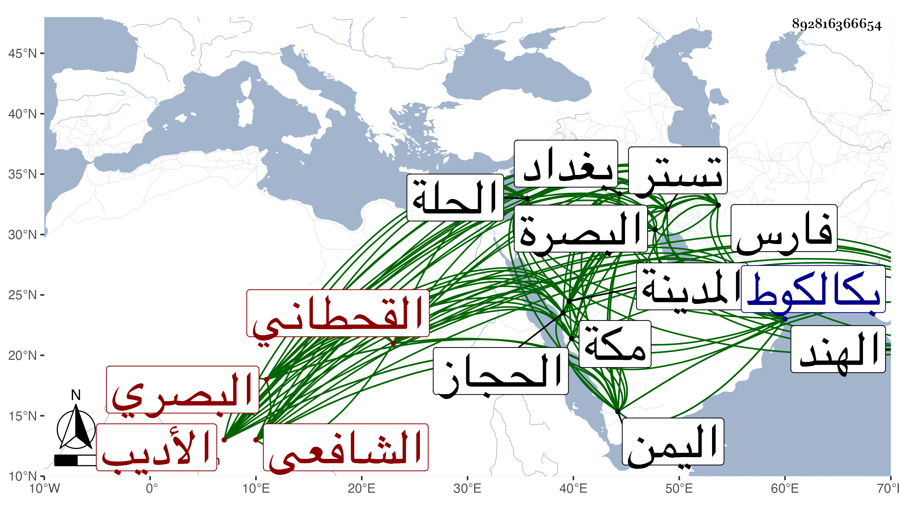

0902Sakhawi.DawLamic.ITO20230111-ara1.EIS1600.892816366654
Biography ID: 892816366654
510
عطاء بن عبد العزيز بن عبد الكريم بن عبد الله بن الكمال محمد بن سعد الدين محمد بن أبي الفرج بن أبي العباس بن زماخة بمعجمتين الأولى مضمومة . الأديب شجاع الدين أبو حسين بن العز الجلال القحطاني البصري الشافعي ويعرف بابن اللوكة بضم اللام المشددة ثم بعد الواو كاف أي القطن الكثير وشهروا به لما كان لهم من المال العظيم . ولد في ربيع الأول سنة أربع وتسعين وسبعمائة بالبصرة ونشأ بها فحفظ بعض القرآن وعني بالأدب وطالع دواوين أربابه وأضاف ذلك لما اشتمل عليه أهل بلاده من الفصاحة فنظم الشعر الجيد وربما أتى منه بالبديع الذي استكثر عليه ولكن الظن الغالب أنه له فربما تكلم على بعض غريبه كلام عارف واهتز في المواضع الجيدة لدفع المخالف ودخل بلاد فارس ششتر وأعمالها وكذا الحلة وبغداد وتلك الأعمال وبلاد الهند واليمن والحجاز غير مرة ثم قطن مكة من سنة سبع وثلاثين مع تردده منها إلى اليمن غير مرة للاسترزاق وزار المدينة النبوية ثلاث مرات وكتب عنه ابن فهد وغيره من أصحابنا أجاز لي ومات بكالكوط في شوال سنة ستين ، ومن نظمه :
| لما تبدى وقد أكبرت صورته | بدر يحير المعنى في معانيه |
| فقلت يا لائمي في محبته | فذلكن الذي لمتنني فيه |
وعندي من نظمه غير هذا .
